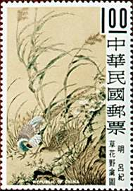
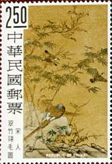
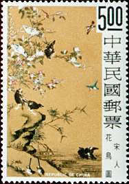
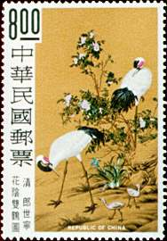
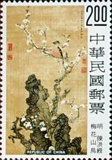
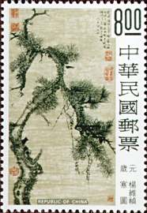
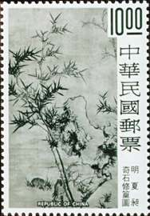

| Created:
04/22/021. Revised: 04/22/01. Copyright © 2001 by Victor Manta, Switzerland. All rights reserved in all countries. |
|
Special Ancient Painting of
Flowers and Birds Stamps
(Issue of 1969)
Issue date: October 9, 1969. Perforation: 13 1/2. Sheet composition: 10 x 5 Dimension (mm): 36 x 51. Process: Photogravure .Photographer: Liu Pao-chin. Paper: Photogravure stamp paper. Printer: Printing Bureau of the Ministry of Finance, Japan. Scott: 1624 - 1627.
Each stamp of this set features a masterpiece of flower and bird painting, selected from the Palace Museum collection.
 |
 |
 |
 |
$1.00. Picture of Wild Flowers and Pheasants
of the Ming dynasty (AD 1368-1644), by the artist Lu Chih. The original painting
is on paper, measuring 58.7 x 146.4 cm.
$2.50. Picture of Bamboos and Birds of the Sung dynasty (AD 960-1279). The
artist is unknown. The original painting is on silk, measuring 109.9 x 185 cm.
$5.00. Picture of Flowers and Birds of the Sung dynasty. The artist is unknown.
The original painting is on silk, measuring 74.3 x 136.8 cm.
$8.00. Picture of Twin Cranes under Shade of Flowers by Jesuit lay brother G.
Castiglione (AD 1688-1766), who came to Peking (now Peiping) in 1715 and served
as court painter to three emperors of the Ching dynasty (AD 1644-1911).The
original painting is on silk, measuring 93.1 x 170.7 cm.
Ancient Chinese Paintings:
Pine, Bamboo, Plum
(Issue of 1977)
Issue date: January 12, 1977. Perforation: 12. Sheet composition: 10 x 5. Dimension (mm): 35.96 x 51.46. Process: Photogravure. Photographer: Wu Cheng-fang. Paper: Photogravure stamp paper. Printer: Hélio Courvoiser S.A., Switzerland. Scott: 2030 - 2032.
The pine, the bamoo, and the plum are known to the Chinese people as the Three Friends of Winter. The pine, an evergreen, is able to withstand even the most severe cold of winter without damage. The bamoo, standing upright in bitterly cold winds, demonstrates perseverance in resisting adversity and distress. The plum blossom, the national flower of the Republic of China, is pure and fragrant, lofty and noble. The subjects of these stamps not only illustrate Chinese traditional art and culture, but also express the moral fortitude of Chinese people. This set of stamps reproduces three Yuan and Ming ancient paintings, recommended by the National Palace Museum.
 |
 |
 |
$2.00. Bird and Plum Blossoms, by Chen Hung-shou, Ming Dynasty (1368-1644). Ink and color on silk. Size: 124.3 x 49.6 cm. Hanging scroll. Chen Hung-shou (1599-1652) was a native of Chu-chi, Chekiang. His Courtesy name was Chang-hou; his sobriquet was Lao-lin. He accepted an honorary academic title, but refused that of a court painter. After the fall of the Ming dynasty, he was associated with loyalist outlaws and later became a Buddhist monk, using the sobriquet Hui-ch'ih. By his nature, he loved to travel off the beaten track; his eccentric personality shows in his calligraphy and paintings. The figures represented in his paintings are often tall, bulky, and out of proportion, yet they are always interesting and in fine taste. When painting historical themes, he took care to represent as faithfully as possible the costumes and demeanor of the period to which the characters belonged. He also excelled in painting plants, birds, and insects.
$8.00. Wintry Days, by Yang Wei-chen, Yuan Dynasty (1277-1368). Ink on paper. Size: 98.1 x 32 cm. Hanging scroll. Yang Wei-chen (1296-1370) was a native of Chu-chi, Chekiang. His Courtesy name was Lien-fu; his sobriquets were T'ieh-yai, T'ieh`-ti Tao-jen, and Pao-i Lao-jen. He excelled in both calligraphy and painting. Yang's father built a house on T'ieh-yai mountain where he planted many plum trees to aid his son's study.
$10.00. Rock and Bamboo, by Hsia Chang, Ming Dynasty (1368-1644). Ink on paper. Size: 275.1 x 104.7 cm. Hanging scroll. Hsia Chang (1388-1470) was a native of K'un-shan, Kiangsu. His Courtesy name was Chung-chao; his sobriquets were Tzu-tsai-chu-shih and Yu-feng. He received the chin-shih degree in 1415. During his early years he made an intensive study of the works and techniques of Wang Fu; later he developed a distinctive new style. His favorite subject was bamboo. Unlike the paintings of the literati, he portrayed various aspects of bamboo in a realistic manner, and tried to make his painting as nearly as possible to his models.
| Created:
04/22/021. Revised: 04/22/01. Copyright © 2001 by Victor Manta, Switzerland. All rights reserved in all countries. |
|